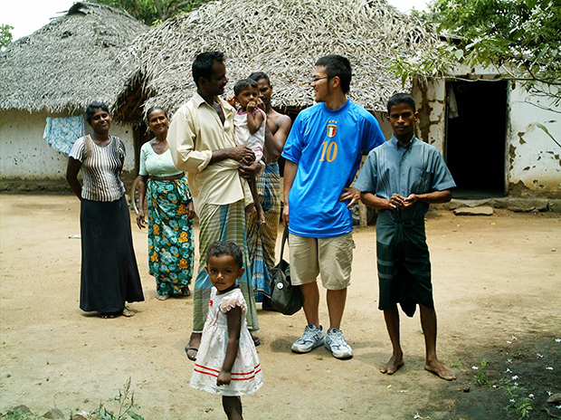
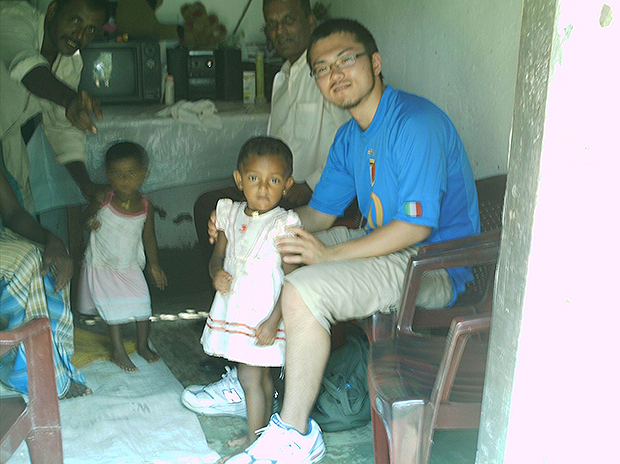
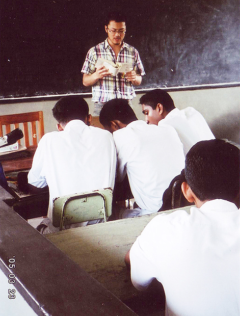
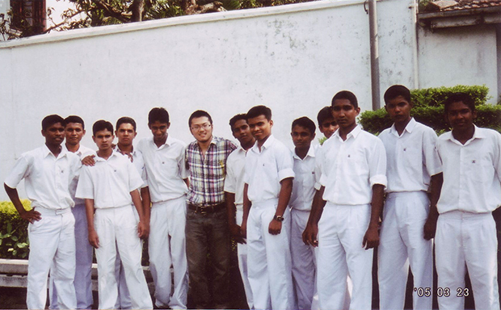
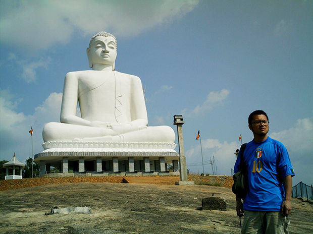
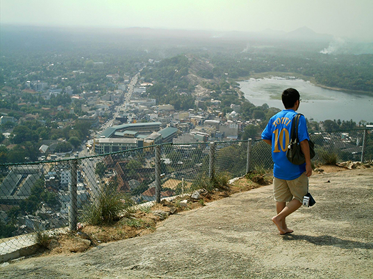

「今回はスリランカ留学のプログラムをご提供いただきありがとうございました。『語学留学したいなあ』と思いインターネットで調べていると、このプログラムに出会いました。
はじめは『スリランカで！？』と思いました。普通語学留学と言えばアメリカ、カナダ、オーストラリアなどを思い浮かべます。しかし、なぜ私がスリランカを選んだのかというと、まったく知らない国だったからです。
『知らないなら行くっきゃない！』という軽い気持ちで申し込みました。このプログラムが語学の勉強以外にホームステイ、低開発村視察、各種ボランティアといういろいろなことができることにも惹かれました。
英語の先生は、熱心に教えてくださりました。文法は大体身についているので、会話を重点的に教えていただきました。
例えば『日本のなになに（祭り、食生活など）について話して下さい』と言われ、こちらが話していき、途中先生の質問などに答えたりするというやり方でした。
そして、会話は休憩のときも続き、紅茶を飲みながら日本との文化の違いやスリランカの歴史などいろいろな話を聞くことができ、とてもためになりました。
英語の勉強以外にもスリランカの果物や、カシューナッツの木になっている段階の実をわざわざ持ってきていただいたりと、とても親切で人間味あふれる人でした。
英語以外のことをいろいろ教えていただき、大変お世話になりました。ホームステイでは料理をはじめとして生活面では何不自由なく暮らすことができ、またとても優しくしていただきました。
食事は主にカレーでしたが、カレーのほかに麺類や、ナンなどいろいろな料理をだしていただきました。それらがすべて家庭で作ったものであるということに驚きました。
今回のプログラムでは、ボランティアで日本語教師ができるということで、日本語教師のボランティアをさせていただきました。ガンパハで日本語の先生と合流し、バスでコロンボへ向かいました。
学校はコロンボのアーナンダーカレッジという小中高一貫の男子校でした。
朝の朝礼で国歌と校歌を聞き、朝ごはんを食べ、教室に行くとすぐ授業が始まりました。

すぐに先生から『このページをやって下さい』と言われましたが、今まで大人数に対して日本語を教えた経験がなかったので、とりあえず文章を読んでいきました。
一通り読むと先生がどんどん解説されるので、することがなくボーっとしていました。
しかし、その項目が終わると先生が『自己紹介してください』とおっしゃったので名前や年齢などを言うと、つぎに先生が『さあーなんでも質問しよう！』と生徒に言い質問タイムとなりました。
はじめ生徒はみんな恥ずかしいのか、あまり質問はなかったのですが『サムライ』の話になるとドッと質問が来るようになり、それをかわきりにしていろいろなことを質問されました。
『日本の家はどんなん？』『今日本で流行っていることは？』などなど、時間があればいくらでも質問が出てくる勢いでした。
ある生徒には『日本の歌を歌って』と言われたのですがぱっと浮かばなく悩んでいると、先生が鞄から『しあわせなら手をたたこう』の歌詞を取り出し、渡されたのでこの曲を歌いました。
楽しい時間はあっという間に過ぎ、授業が終わりました。
せっかくの機会なので写真をみんなで撮りたいと頼むと快く承諾していただきみんなでパシャ！撮り終わると生徒の一人から日本語で『会えて良かったです！』と言われました。
今まで教えられることばかりだったので気がつかなかったのですが、今回こうして現地の生徒さん達と触れ合い、この生徒さんたちの将来に影響を与えることがどれだけ重要で、やりがいのあることかということにジーンときました。

また、日本人であるので日本の文化などをもっと教えられるくらい知っておかなければいけないと思いました。
日本語教師のお手伝いも得るものがとても多かったです。機会があれば是非またやりたいと思います。
スリランカではこのプログラム以外にもスリーパーダやキャンディへ行ってきましたが、このプログラムのおかげでスリランカの風土、雰囲気にいち早く慣れたので気持ちにゆとりを持てて、友達もでき、食べ物にも困ることがありませんでした。
滞在中にインドネシアで再び大きな地震が起きましたが、私の無事を親に直接ご連絡いただき、両親も安心していました。どうもお世話になりました。
現地と連絡をすぐに取ることができるＢｅインターナショナルさまはとても頼れる存在でした。そして、プログラムでは普通の旅行ではなかなか体験できないことをさせていただきとても感謝しております。
どうもありがとうございました！！」

